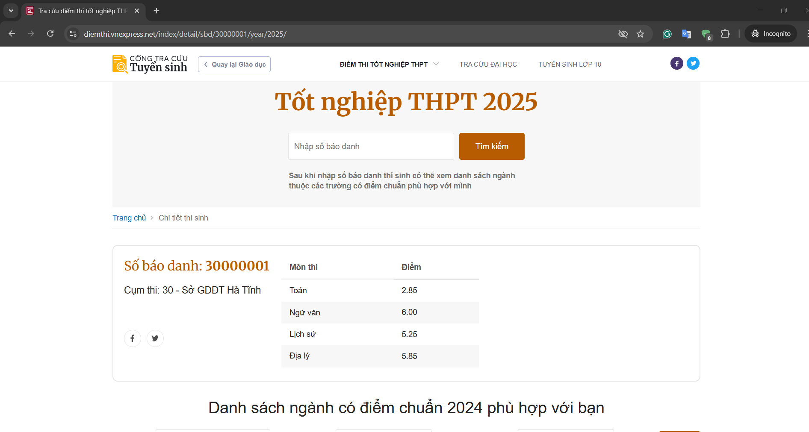
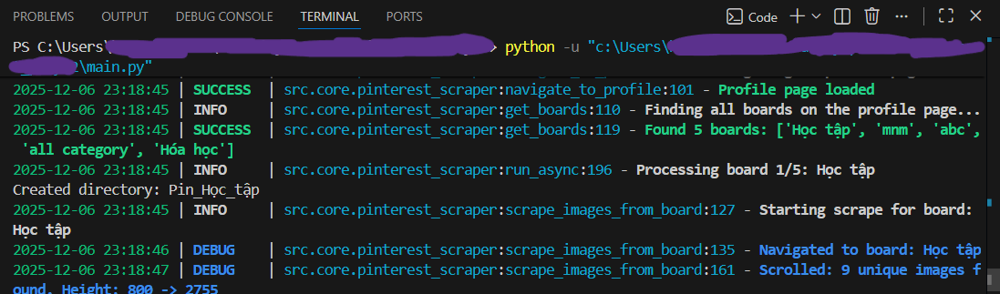
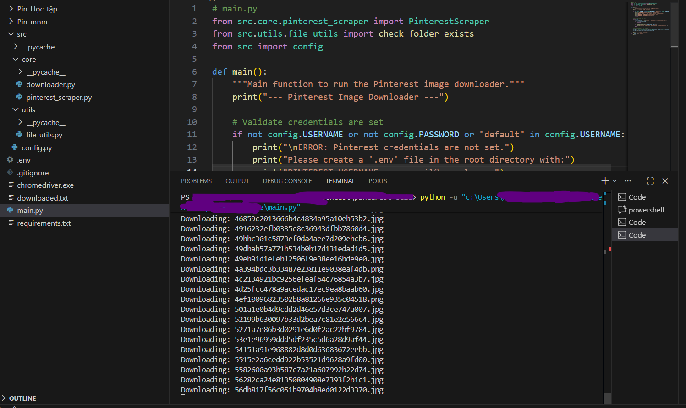
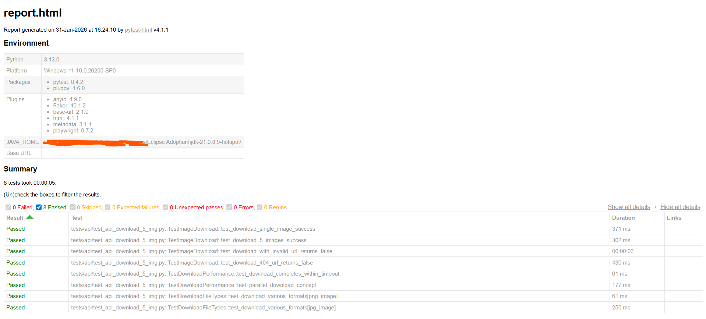
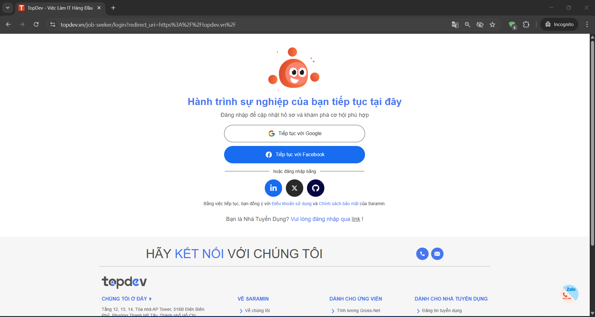
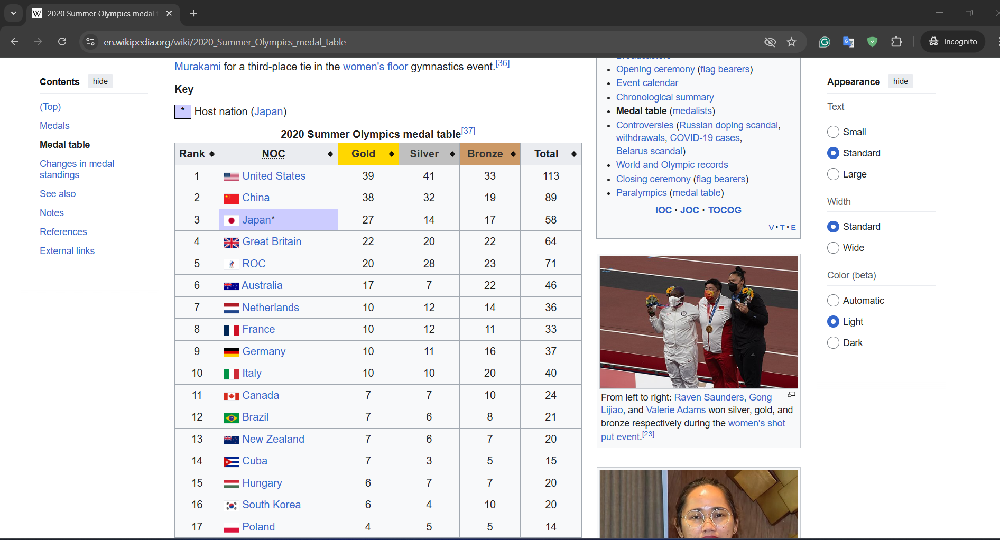
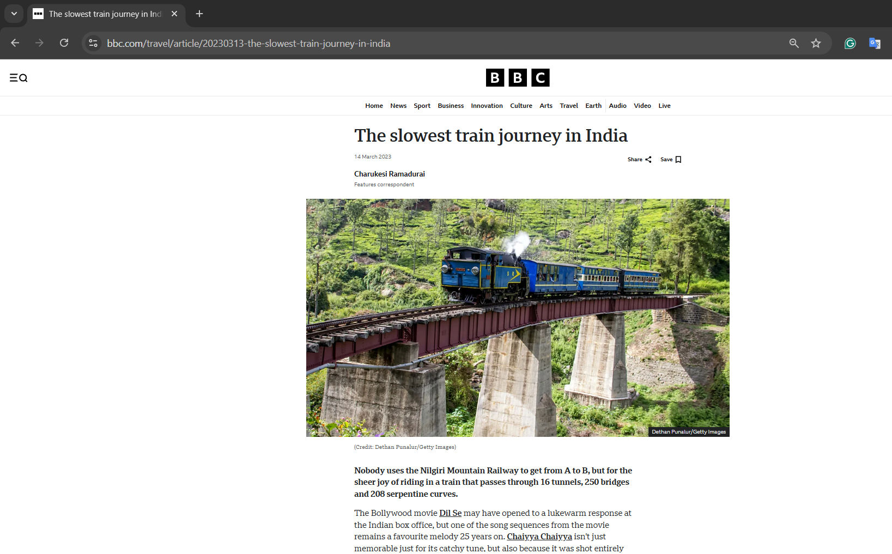

VnExpress News
Python Selenium BeautifulSoup Pandas CSV Export

Below is the Python implementation:
from selenium import webdriver
from bs4 import BeautifulSoup
import pandas as pd
import time
url = "https://vnexpress.net/"
# Cấu hình Chrome options
options = webdriver.ChromeOptions()
options.add_argument("--disable-gpu")
options.add_argument("--window-size=700,800")
options.add_argument("user-agent=Mozilla/5.0 (Windows NT 10.0; Win64; x64) AppleWebKit/537.36")
driver = webdriver.Chrome(options=options)
driver.get(url)
time.sleep(3)
html = driver.page_source
driver.quit()
# Parse HTML với BeautifulSoup
soup = BeautifulSoup(html, 'lxml')
character_news = soup.find('div', class_='row-menu')
data = []
if character_news:
cat_menus = character_news.find_all('ul', class_='cat-menu')
for menu in cat_menus:
first_li = menu.find('li')
if first_li:
main_link = first_li.find('a')
if main_link:
main_name = main_link.get_text(strip=True)
main_href = main_link.get('href', '')
data.append({"Name": main_name, "Link": main_href, "Type": "Main"})
# Các mục con
for li in menu.find_all('li')[1:]:
sub_link = li.find('a')
if sub_link:
sub_name = sub_link.get_text(strip=True)
sub_href = sub_link.get('href', '')
data.append({"Name": sub_name, "Link": sub_href, "Type": "Sub"})
# Lưu dữ liệu ra CSV
df = pd.DataFrame(data)
df.to_csv("character_news_vnexpress.csv", index=False, encoding='utf-8-sig')VnExpress Scores
Python Requests BeautifulSoup CSV Processing Error Handling Rate Limiting

Below is the Python implementation:
import requests
import requests
from bs4 import BeautifulSoup
import csv
import time
import random
import os
START_SBD = 30000001
END_SBD = 39999999
YEAR = 2025
MAX_ERRORS = 3
OUTPUT_FILE = 'diemthi_thptqg_2025.csv'
headers = {
'User-Agent': 'Mozilla/5.0 (Windows NT 10.0; Win64; x64) AppleWebKit/537.36 (KHTML, like Gecko) Chrome/120.0.0.0 Safari/537.36',
'Accept-Language': 'vi-VN,vi;q=0.9,en-US;q=0.8,en;q=0.7',
}
all_subjects = set()
rows = []
error_count = 0
def get_student_data(sbd):
url = f"https://diemthi.vnexpress.net/index/detail/sbd/{sbd}/year/{YEAR}"
print(f"Lấy SBD: {sbd}")
try:
resp = requests.get(url, headers=headers, timeout=10)
if resp.status_code != 200:
return None
soup = BeautifulSoup(resp.text, 'html.parser')
info = soup.find('div', class_='o-detail-thisinh__info')
diemthi = soup.find('div', class_='o-detail-thisinh__diemthi')
if not info or not diemthi:
return None
sbd_tag = info.find('h2', class_='o-detail-thisinh__sbd')
sbd_val = sbd_tag.find('strong').text.strip() if sbd_tag else str(sbd)
table = diemthi.find('table', class_='e-table')
if not table:
return None
tbody = table.find('tbody')
subjects = {}
for tr in tbody.find_all('tr'):
tds = tr.find_all('td')
if len(tds) == 2:
mon = tds[0].text.strip()
diem = tds[1].text.strip()
subjects[mon] = diem
return {
'SBD': sbd_val,
'Subjects': subjects
}
except Exception:
return None
def write_csv(rows, all_subjects):
fieldnames = ['SBD'] + sorted(all_subjects)
with open(OUTPUT_FILE, 'w', newline='', encoding='utf-8-sig') as f:
writer = csv.DictWriter(f, fieldnames=fieldnames)
writer.writeheader()
for row in rows:
for mon in all_subjects:
if mon not in row:
row[mon] = ''
writer.writerow(row)
def append_csv(row, all_subjects, write_header=False):
fieldnames = ['SBD'] + sorted(all_subjects)
with open(OUTPUT_FILE, 'a', newline='', encoding='utf-8-sig') as f:
writer = csv.DictWriter(f, fieldnames=fieldnames)
if write_header:
writer.writeheader()
for mon in all_subjects:
if mon not in row:
row[mon] = ''
writer.writerow(row)
# File exist or not
file_exists = os.path.exists(OUTPUT_FILE)
for sbd in range(START_SBD, END_SBD + 1):
data = get_student_data(sbd)
if data is None:
error_count += 1
if error_count >= MAX_ERRORS:
print(f"Dừng lại ở SBD {sbd} do gặp {MAX_ERRORS} lần lỗi liên tiếp.")
break
else:
error_count = 0
new_subjects = set(data['Subjects'].keys()) - all_subjects
all_subjects.update(data['Subjects'].keys())
row = {'SBD': data['SBD']}
row.update(data['Subjects'])
rows.append(row)
# If new subjects found, update the entire CSV file with new header
if new_subjects and len(rows) > 1:
print(f"Phát hiện môn mới: {new_subjects}. Đang cập nhật lại file CSV...")
write_csv(rows, all_subjects)
else:
# If no new subjects found, append the row to the existing CSV
append_csv(row, all_subjects, write_header=(not file_exists and len(rows) == 1))
file_exists = True
time.sleep(random.uniform(0.2, 0.7))Pinterest Downloader (Playwright)
Python Playwright Async/Await Requests Loguru ThreadPoolExecutor

Below is the Python implementation:
import sys
from loguru import logger
from src.core.pinterest_scraper import PinterestScraper
from src.utils.file_utils import check_folder_exists
from src import config
# Cấu hình Loguru với màu sắc và file rotation
logger.remove()
logger.add(
sys.stderr,
format="{time:YYYY-MM-DD HH:mm:ss} | {level: <8} | {name}:{function}:{line} - {message}",
level="DEBUG",
colorize=True
)
logger.add(
"logs/pinterest_scraper_{time:YYYY-MM-DD}.log",
rotation="10 MB",
retention="7 days",
compression="zip"
)
def main():
"""Main function to run the Pinterest image downloader."""
logger.info("=== Pinterest Image Downloader Started ===")
# Validate credentials
if not config.USERNAME or not config.PASSWORD or "default" in config.USERNAME:
logger.error("Pinterest credentials are not set!")
return
# Get folder name from user
folder_name_temp = input("Enter a base name for the download folders: ")
# Initialize and run the scraper
scraper = PinterestScraper(username=config.USERNAME, password=config.PASSWORD)
scraper.run(base_folder_name=folder_name_temp)
logger.success("=== Process Finished ===")Pinterest Downloader (Selenium)
Python Selenium BeautifulSoup Chrome WebDriver python-dotenv

Below is the Python implementation:
from src.core.pinterest_scraper import PinterestScraper
from src.utils.file_utils import check_folder_exists
from src import config
def main():
"""Main function to run the Pinterest image downloader."""
print("--- Pinterest Image Downloader ---")
# Validate credentials are set
if not config.USERNAME or not config.PASSWORD or "default" in config.USERNAME:
print("\nERROR: Pinterest credentials are not set.")
print("Please create a '.env' file in the root directory with:")
print("PINTEREST_USERNAME=your_email@example.com")
print("PINTEREST_PASSWORD=your_password")
return
# Get folder name from user
while True:
folder_name_temp = input("Enter a base name for the download folders: ")
if not folder_name_temp:
print("Folder name cannot be empty.")
continue
if check_folder_exists(f"{folder_name_temp}_*"):
print("Warning: Folders with this base name might already exist.")
break
# Initialize and run the scraper
scraper = PinterestScraper(username=config.USERNAME, password=config.PASSWORD)
scraper.run(base_folder_name=folder_name_temp)
print("\n--- Process Finished ---")
if __name__ == "__main__":
main()Pinterest Automation
Python 3.10+ Playwright Pytest pytest-html python-dotenv Page Object Model

Below is the Python implementation:
# Key Features of the Framework
features = {
"Architecture": [
"Page Object Model (POM) with BasePage pattern",
"Centralized locators management",
"Environment-based configuration (Local/Staging/Production)",
"Dataclass-based settings with type hints"
],
"Testing Capabilities": [
"Login flow automation",
"Search functionality testing",
"High-resolution image download",
"Parameterized test data"
],
"Reliability": [
"Fallback locator strategy (3-level cascade)",
"Smart wait mechanisms",
"Auto-screenshot on failure",
"Comprehensive error handling"
],
"Reporting": [
"HTML reports with pytest-html",
"Video recording for debugging",
"Detailed logging with emojis",
"Test markers (smoke, regression, slow)"
]
}ITviec Scraper
Python Selenium BeautifulSoup Pandas Excel Export

Below is the Python implementation:
# No code foundTopDev Scraper
Python Selenium BeautifulSoup Pandas Excel Export

Below is the Python implementation:
# No code foundWiki Table Scraper
Python Requests BeautifulSoup CSV Processing Data Cleaning Wikipedia API

Below is the Python implementation:
import requests
from bs4 import BeautifulSoup
import csv
url = 'https://en.wikipedia.org/wiki/2020_Summer_Olympics_medal_table'
useragent = "Mozilla/5.0 (Windows NT 10.0; Win64; x64) AppleWebKit/537.36 (KHTML, like Gecko) Chrome/58.0.3029.110 Safari/537.3"
headers = {
'User-Agent': useragent
}
response = requests.get(url, headers=headers)
if response.status_code == 200:
soup = BeautifulSoup(response.content, 'html.parser')
table = soup.find('table', {'class': 'wikitable sortable sticky-header-multi plainrowheaders jquery-tablesorter'})
data = []
for row in table.find_all('tr'):
cols = row.find_all(['th', 'td'])
cols = [col.text.strip() for col in cols]
data.append(cols)
with open('olympic_medal_table.csv', 'w', newline='', encoding='utf-8') as file:
writer = csv.writer(file)
writer.writerows(data)
print("Finished")
else:
print(f'Failed to retrieve the webpage. Status code: {response.status_code}')BBC Converter
Python Requests BeautifulSoup python-docx Pillow (PIL) BBC News

Below is the Python implementation:
import requests
from bs4 import BeautifulSoup
from docx import Document
from docx.shared import Inches
from PIL import Image
from io import BytesIO
url = "https://www.bbc.com/travel/article/20230313-the-slowest-train-journey-in-india"
headers = {
"User-Agent": "Mozilla/5.0 (Windows NT 10.0; Win64; x64) AppleWebKit/537.36 (KHTML, like Gecko) Chrome/115.0.0.0 Safari/537.36"
}
response = requests.get(url, headers=headers)
soup = BeautifulSoup(response.text, "html.parser")
doc = Document()
article = soup.find("article")
if not article:
print("Cannot find article!")
exit()
title = article.find("h1")
if title:
doc.add_heading(title.get_text(strip=True), level=0)
# Description
desc = article.find("p", class_="ssrcss-1q0x1qg-Paragraph")
if desc:
doc.add_paragraph(desc.get_text(strip=True))
# Get content and images
for elem in article.find_all(["h2", "h3", "p", "figure"], recursive=True):
if elem.get("data-component") in ["tag-list-block", "advertisement-block"]:
break
if elem.name in ["h2", "h3"]:
text = elem.get_text(strip=True)
if text:
doc.add_heading(text, level=2)
elif elem.name == "p":
text = elem.get_text(strip=True)
if text:
doc.add_paragraph(text)
elif elem.name == "figure":
img_tag = elem.find("img", {"srcset": True})
if img_tag:
srcset = img_tag["srcset"]
img_url = srcset.split(",")[-1].strip().split(" ")[0]
print("Ảnh gốc:", img_url)
# Download image
img_res = requests.get(img_url)
image = Image.open(BytesIO(img_res.content))
# Convert to JPEG for Word
img_io = BytesIO()
image.convert("RGB").save(img_io, format="JPEG")
img_io.seek(0)
# Insert image into Word
doc.add_picture(img_io, width=Inches(4))
caption = elem.find("figcaption")
if caption:
para = doc.add_paragraph(caption.get_text(strip=True))
if para.runs:
para.runs[0].italic = True
# Save Word file
doc.save("bbc_article.docx")
print("Finished Saving")